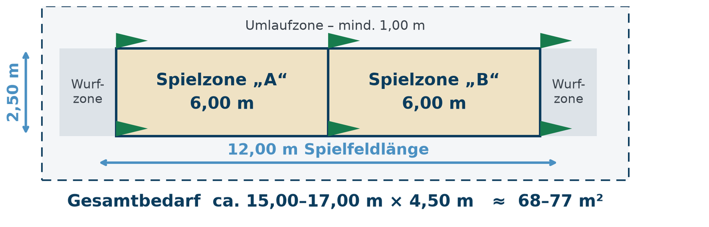

Reine SpielflächePlaying area properSuperficie de juego
12,00 m × 2,50 m = 30 m², geteilt in zwei Spielzonen von je 6,00 m.
12.00 m × 2.50 m = 30 m², divided into two zones of 6.00 m each.
12,00 m × 2,50 m = 30 m², dividida en dos zonas de 6,00 m.
Es ist wie Boule – aber mit Scheiben statt Kugeln. Eine Scheibe wiegt 325 Gramm, eine Pétanque-Kugel 650 bis 800.It is like pétanque – but with discs instead of balls. A disc weighs 325 grams, a pétanque ball 650 to 800.Es como la petanca, pero con chapas en vez de bochas. Una chapa pesa 325 gramos; una bocha de petanca, entre 650 y 800.

Die Regeln sind fast dieselben wie beim Boule: Zielobjekt werfen, abwechselnd näher herankommen, am Ende nachmessen. Der Unterschied liegt im Spielgerät – und daraus folgt der Unterschied beim Untergrund.The rules are almost the same as in pétanque: throw the target, take turns getting closer, measure at the end. The difference is the equipment – and from that follows the difference in surface.Las reglas son casi las mismas que en la petanca: se tira el objetivo, se alterna acercándose y al final se mide. La diferencia está en el material, y de ahí viene la diferencia de superficie.
| Boule / Pétanque | Tejo | |
|---|---|---|
| Spielgerät | Stahlkugel, Ø 70–80 mm, 650–800 g | Kunststoffscheibe, Ø 119 mm, 325 g |
| Zielobjekt | Cochonnet (Holzkugel) | Tejín (Scheibe, Ø 70 mm) |
| Nach dem Wurf | Die Kugel rollt aus | Die Scheibe bleibt liegen |
| Untergrund | Fester Splittbelag genügt | Sand oder Erde zwingend |
| Boule / pétanque | Tejo | |
|---|---|---|
| Equipment | Steel ball, Ø 70–80 mm, 650–800 g | Plastic disc, Ø 119 mm, 325 g |
| Target | Cochonnet (wooden ball) | Tejín (disc, Ø 70 mm) |
| After the throw | The ball rolls out | The disc stays put |
| Surface | Compacted gravel is enough | Sand or earth is essential |
| Petanca / boules | Tejo | |
|---|---|---|
| Material | Bocha de acero, Ø 70–80 mm, 650–800 g | Chapa de plástico, Ø 119 mm, 325 g |
| Objetivo | Bolín de madera | Tejín (chapa, Ø 70 mm) |
| Tras el tiro | La bocha rueda | La chapa queda quieta |
| Superficie | Alcanza con gravilla compactada | Arena o tierra, sin excepción |
Tejo ergänzt die Boule-Kultur, statt mit ihr zu konkurrieren – gleiche Zielgruppe, gleicher Spielgedanke, neues Spielgerät. Eine Nachbarschaft zu einem Boule-Platz wäre für beide Seiten ein Gewinn.
Tejo complements pétanque rather than competing with it – same audience, same idea, different equipment. Sharing a site with a pétanque pitch would benefit both.
El tejo complementa a la petanca en lugar de competir con ella: mismo público, misma idea de juego, otro material. Compartir predio con una cancha de petanca sería bueno para ambos.

12,00 m × 2,50 m = 30 m², geteilt in zwei Spielzonen von je 6,00 m.
12.00 m × 2.50 m = 30 m², divided into two zones of 6.00 m each.
12,00 m × 2,50 m = 30 m², dividida en dos zonas de 6,00 m.
Rund 15 bis 17 m × 4,50 m, also etwa 68 bis 77 m² – so viel wie zwei bis drei Pkw-Stellplätze.
Around 15 to 17 m × 4.50 m, i.e. about 68 to 77 m² – two to three car parking spaces.
Entre 15 y 17 m × 4,50 m, o sea unos 68 a 77 m²: dos o tres plazas de estacionamiento.
Im Freien genügt eine Schnur als Begrenzung. Im Winter derselbe Feldaufbau in einer Halle.
Outdoors a string is enough to mark the lines. In winter the same layout goes indoors.
Al aire libre alcanza con un hilo para marcar. En invierno, el mismo trazado bajo techo.
Das ist die einzige technische Bedingung, bei der wir nicht flexibel sein können. Die Scheibe wird flach geworfen, muss leicht einsinken und dort liegen bleiben, wo sie aufkommt.This is the one technical condition we cannot be flexible about. The disc is thrown flat, has to sink in slightly and stay exactly where it lands.Es la única condición técnica en la que no podemos ceder. La chapa se lanza plana, debe hundirse levemente y quedar donde cae.
| Untergrund | Geeignet? | Begründung |
|---|---|---|
| Sand mit bis zu 20 % Erdanteil | Ja – Reglement-Belag | Der offizielle Belag; ideal für Training und Turniere |
| Verdichtete Erde, Tenne, feiner Splitt | Ja | Entspricht dem Belag vieler Boulebahnen |
| Rasen, Asphalt, Beton, Pflaster, Kunstrasen | Nein | Die Scheibe springt, rutscht weg oder wird beschädigt |
| Surface | Suitable? | Why |
|---|---|---|
| Sand with up to 20 % earth | Yes – regulation surface | The official surface; ideal for training and tournaments |
| Compacted earth, clay, fine grit | Yes | Comparable to many pétanque pitches |
| Grass, asphalt, concrete, paving, artificial turf | No | The disc bounces, slides away or gets damaged |
| Superficie | ¿Sirve? | Por qué |
|---|---|---|
| Arena con hasta 20 % de tierra | Sí – superficie reglamentaria | Es la oficial; ideal para entrenar y competir |
| Tierra compactada, polvo de ladrillo, gravilla fina | Sí | Equivale al piso de muchas canchas de petanca |
| Césped, asfalto, hormigón, adoquines, césped sintético | No | La chapa pica, se desliza o se daña |
Gute Nachricht: Dieser Belag ist in Dossenheim bereits vorhanden – auf der Beachvolleyballanlage und auf den Sandplätzen der Vereine. Es müsste also nichts neu gebaut werden. Mehr zur Platzsuche.
Good news: this surface already exists in Dossenheim – on the beach volleyball courts and on the clubs’ sand pitches. Nothing would have to be built. More about the search.
Buena noticia: esa superficie ya existe en Dossenheim, en la cancha de beach vóley y en las canchas de arena de los clubes. No habría que construir nada. Más sobre la búsqueda.
Wer den Sport zum ersten Mal sieht, versteht ihn sofort. Auf dem YouTube-Kanal TejoTV gibt es Spielszenen, Turniere und Technik aus Argentinien.Anyone seeing the sport for the first time gets it straight away. The YouTube channel TejoTV has match footage, tournaments and technique from Argentina.Quien ve el deporte por primera vez lo entiende enseguida. En el canal de YouTube TejoTV hay partidos, torneos y técnica desde Argentina.
youtube.com/@TejoTV Spielszenen, Turniere und Technik – den Kanal auf YouTube öffnen.Match footage, tournaments and technique – open the channel on YouTube.Partidos, torneos y técnica – abrir el canal en YouTube.Hinweis: Der Link führt zu YouTube. Wir binden keine Videos direkt ein, damit beim Besuch dieser Seite keine Daten an Dritte gehen.Note: the link opens YouTube. We do not embed videos directly, so that visiting this site sends no data to third parties.Nota: el enlace abre YouTube. No incrustamos videos para que visitar esta página no envíe datos a terceros.
Vorkenntnisse braucht es keine, Sportkleidung auch nicht. Die Scheiben stellt der Verein. Schreib uns einfach – wir melden uns, sobald der nächste Spieltermin steht.No experience needed, no sports kit either. The club provides the discs. Just write to us – we will get back to you as soon as the next session is set.No hace falta experiencia ni ropa deportiva. El club pone los tejos. Escribinos y te avisamos apenas tengamos fecha de la próxima jugada.